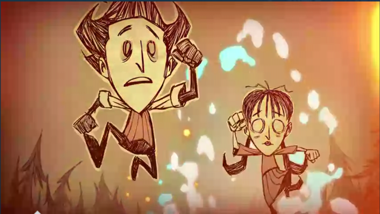

Development
Conception and design:
Don't Starve was developed and published by indie studio Klei Entertainment. The game began development as part of a 48-hour game jam in 2010. The team liked the idea but shelved it until two years later, when they had the time to flesh it out. Full development commenced in 2012, while Klei was nearing the end of the development process of Mark of the Ninja. This was during the heat of an industry trend of creating games in which players are dropped into a world with few instructions and a goal of survival. The torch of this movement was held by the 2011 sandbox game Minecraft. Member Kevin Forbes stated in an interview that Minecraft was one of the team's biggest influences, particularly its exploration elements. However, as the game was conceived as a "weird experiment", the team's main goal was to innovate in terms of gameplay and aesthetics, specifically by adding a layer of emphasis on characterization and themes. Another influence was the 2005 Nintendo DS title Lost in Blue, which contains similar supernatural elements and a day/night cycle.
The game's dark and supernatural yet cartoonish art style was influenced by the work of filmmaker Tim Burton, to which it has been frequently compared, and by writers Edward Gorey and H.P. Lovecraft. Forbes noted the team's ambition of creating something "dark and creepy." After conception of the basic game setup, Forbes penned a backstory influenced by steampunk and horror, and lead creative director Jeff Agala added comic strip-like art elements. To further the game's atmosphere of loneliness and directionlessness, Klei decided firmly against multiplayer gameplay.[citation needed] However, in December 2014, after numerous requests, Klei finally released the multiplayer version of the game titled "Don't Starve Together" on Steam Early Access after an initial closed beta release.
Development was marked by a few changes to the game's formula that would be reverted. Most notably, at one point during development, Klei wanted to add quests to the existing open gameplay. Klei shelved this idea when they realized that "having external goals is extremely counter to what is fun about the game." Nevertheless, Klei co-founder Jamie Cheng has emphasized that Klei values the freedom to try different approaches that being tied to a major publisher would not afford them.
Cheng related in an interview that Don't Starve's development taught Klei a considerable amount about the nature of the emergent gameplay that was endemic to its open and random world; Klei tries to experiment with a new genre with each project and prefers not to create sequels to any of its games. These lessons would later be used to balance the mechanics of Klei's upcoming project Invisible, Inc.
Releases and updates:
Klei employees argued at length about whether to release Don't Starve as a free-to-play game. Forbes stated that he "wouldn't rule it out as a business model" but that the team was not ready to make such a decision. It was, however, free in the early days of beta testing.
Don't Starve was released in beta form in 2012, a move that Klei decided on to find out "what aspects of the game players are really responding to, and usability issues in the bud." Klei's Cory Rollins has stated that he finds that most developers' beta periods simply serve as an early release of the game and result in few glitches being fixed, and wanted to make more use of the strategy. Added benefits the team discovered during beta testing were that it forced them to make important decisions about the game's upcoming release well in advance, and that it solidified a player base. In addition, Klei added the ability for food to spoil during this time, inspired by a forum thread about such possibilities. Cheng found Don't Starve to have "ended up a way better game because of the community." It spent a few months in beta testing, and Klei continued to give updates for months after its release.
In June 2013, shortly after the game's main release, a PlayStation 4 version was announced; it would not be released until January of the following year. In a January 2014 interview, Rollins mentioned internal discussions of creating a PlayStation Vita version of Don't Starve, citing massive community interest in playing it on the PlayStation 4 remotely. An iOS edition was released in July 2014. The company is also considering other mobile phone adaptations, as well as a potential sequel, but is not prioritizing them.
Don't Starve: Reign of Giants:
Don't Starve: Reign of Giants, the game's first paid downloadable content expansion, was announced on January 18, 2014. Three cryptic teasers were released, each named after a season of the year. The first, "Fall", shows a badger-like creature, while "Winter" adds an unlockable arachnid character named Webber and "Spring" a furry leg accompanied by a hatching egg. The expansion was made available as early access on April 2 and was released on May 1. It contains new items, characters, and environments.
Don't Starve Together:
On May 7, 2014, Klei announced that a free multiplayer expansion, Don't Starve Together, would be coming later that year. As they had initially decided not to create multiplayer, Klei clarified on their forums that they originally had not been "confident that it would actually work both in concept and implementation" but had changed their minds in response to popular demand and bringing in new help.
Don't Starve Together made its debut on Steam's Early Access program on December 15, 2014. It supports up to six players at a time, who can be either existing friends or strangers and can play in public or private games. The expansion contains most, if not all, features of the single-player game, but with ongoing balance patches being made for multiplayer. The game was released out of early access on April 21, 2016.
{% endblock %}